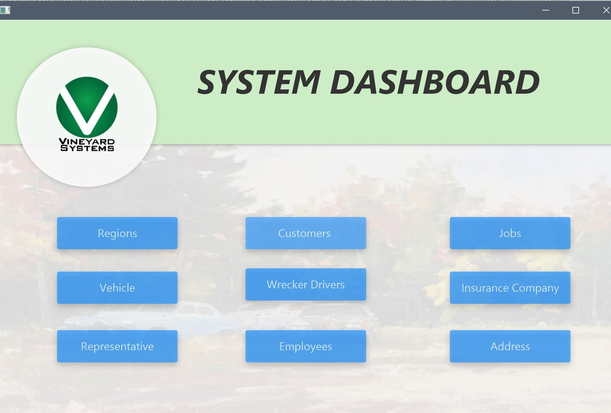
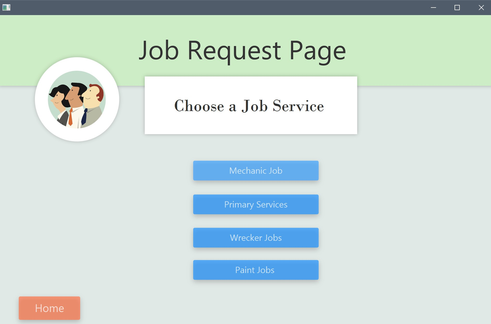
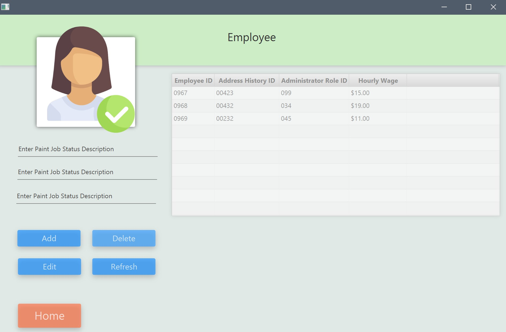

Welcome!

Sceenshots
Collaborated with a team of 6 to build a Data Solution for Allied Collision Center. Created a Java desktop application with GUI connected to Microsoft SQL Database for convenient data entry. Database included 25 tables with 7 inner & outer joins and GUIs scenes for each table.
  


Certification

AWS Certified Solutions Architect Associate – Acquired, June 2020 - Skilled with AWS Cloud Computing Infrastructures and able to create highly available cloud deployment models. This cert shows that I have a fundamental understanding of IT services and their uses in the AWS Cloud.
Click Here or click the picture to view the verified certification link.

AWS Certified Solutions Architect Associate - Acquired, June 2020 - Skilled with AWS Cloud Computing Infrastructures and able to create secure highly available cloud deployment models using architectural design principles based on customer requirements.
Click Here or click the picture to view the verified certification link.
Contact Me
Email - albertitauma@gmail.com
Linkedin -
Click Here